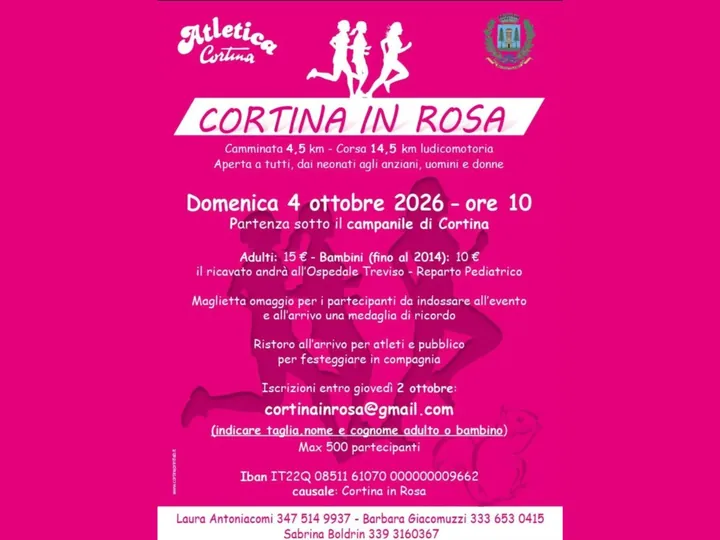

dom 4 ott
Cortina in Rosa
Il 4 ottobre Cortina si tinge di rosa e trasforma lo sport in un grande gesto collettivo di solidarietà. Una giornata aperta a tutti — donne e uomini, bambini, famiglie, sportivi e semplici appassionati — perché quando una comunità corre nella stessa direzione, ogni passo può…
 Indicazioni
Indicazioni
- Costi e prenotazioni
- Costo non indicato · Prenotazione non indicata
- Programma
- Programma da verificare. Apri la fonte ufficiale per orari e possibili aggiornamenti.
- In caso di maltempo
- Nessuna indicazione specifica pubblicata.
- Note
- Acquisito automaticamente dalla fonte.
L’EVENTO
Descrizione completa
Il 4 ottobre Cortina si tinge di rosa e trasforma lo sport in un grande gesto collettivo di solidarietà. Una giornata aperta a tutti — donne e uomini, bambini, famiglie, sportivi e semplici appassionati — perché quando una comunità corre nella stessa direzione, ogni passo può fare la differenza.
Alle 10.00 , sotto il campanile di Cortina, parte Cortina in Rosa , l’appuntamento firmato Atletica Cortina che unisce movimento, prevenzione, divertimento e solidarietà nel cuore delle Dolomiti.
Due percorsi, una sola energia: 4,5 km di camminata per chi vuole vivere la giornata con il proprio ritmo e 14,5 km di corsa ludicomotoria per chi vuole mettersi in movimento e lasciarsi trascinare dall’adrenalina.
La partecipazione è aperta a tutti. 15 € per gli adulti, 10 € per i bambini nati fino al 2014 : il ricavato sarà devoluto al Reparto Pediatrico dell’Ospedale di Treviso .
E per rendere ogni partecipante parte di questa grande onda rosa: maglietta ufficiale da indossare durante l’evento e medaglia ricordo al traguardo . All’arrivo, ristoro e festa per atleti, famiglie e pubblico.
Partenza sotto il Campanile di Cortina 4,5 km Camminata • 14,5 km Corsa Ristoro e festa all’arrivo
Corri. Condividi. Dona. Perché ogni passo può diventare speranza.
ISCRIZIONI ENTRO GIOVEDÌ 2 OTTOBRE
IL PROGRAMMA
Programma e orari
Appuntamenti raccolti dalle fonti elencate. Dove manca un orario, non è ancora disponibile in questa scheda.
Programma pubblicato
- 2026-10-04 — 2026-10-04 · 10:00:00
INFORMAZIONI UTILI
Prima di partire
- Controllare la fonte prima di partire.
ORGANIZZAZIONE